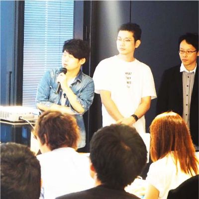
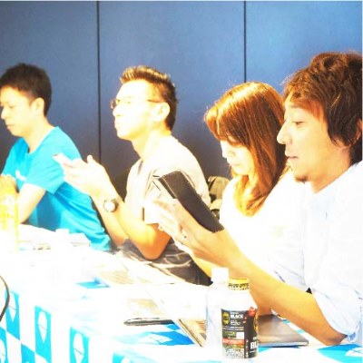
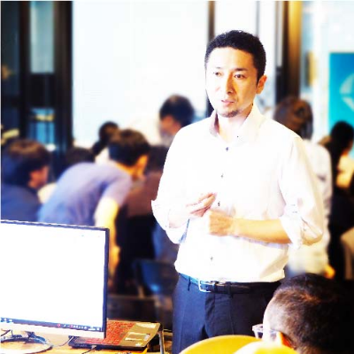

1. ビジネス視点も盛り込んだ開発経験によるレベルアップ
DEMODAY当日までに、何ヶ月もの間アイデアブレストからプロダクト開発、ユーザ検証までの一連の経験を積むことになります。 そのため、限られた時間の中で社会の問題解決をするために、優先順位を見極め、最小限のプロダクトを磨き込むことが必要です。 ユーザが求めるものをゴールとした逆算思考で、自分の殻をブレークスルーしてレベルアップすることができます。

2. 約100名の観戦者と豪華審査員によるフィードバックの獲得
DEMODAYでは約100名の観覧者の前で自身が開発したアプリケーションを発表していただきます。 また、第一線で活躍する経営者、起業支援家、CTO、VCなどの方々を審査員としてお招きします。 開発したアプリケーションについて、多数のユーザ候補とプロの目線で評価、フィードバックを獲得することができます。

3. 審査員特別賞の獲得によるセルフブランディングの形成
審査員特別賞を獲得した実績は、後の就職活動や複業活動、自己紹介の実績として活用いただけることでしょう。 駆け出しエンジニアから一人前のエンジニアになるための、急成長のキッカケになります。